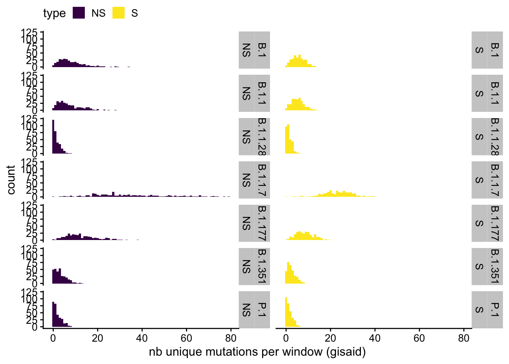
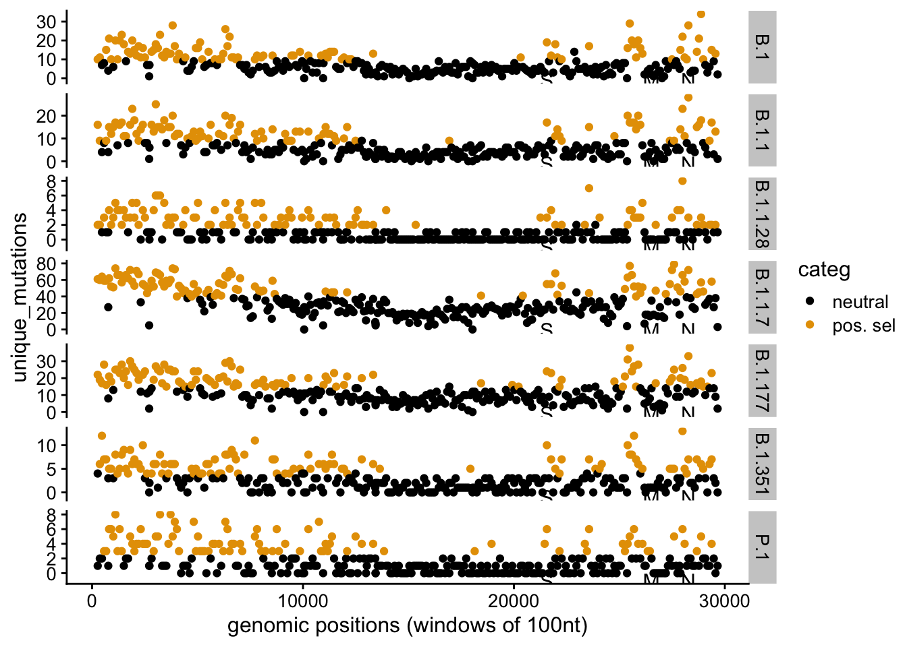

Last updated: 2021-07-01
Checks: 6 1
Knit directory: sars-cov2-gisaid/
This reproducible R Markdown analysis was created with workflowr (version 1.6.2). The Checks tab describes the reproducibility checks that were applied when the results were created. The Past versions tab lists the development history.
The R Markdown file has unstaged changes. To know which version of the R Markdown file created these results, you’ll want to first commit it to the Git repo. If you’re still working on the analysis, you can ignore this warning. When you’re finished, you can run wflow_publish to commit the R Markdown file and build the HTML.
Great job! The global environment was empty. Objects defined in the global environment can affect the analysis in your R Markdown file in unknown ways. For reproduciblity it’s best to always run the code in an empty environment.
The command set.seed(20210408) was run prior to running the code in the R Markdown file. Setting a seed ensures that any results that rely on randomness, e.g. subsampling or permutations, are reproducible.
Great job! Recording the operating system, R version, and package versions is critical for reproducibility.
Nice! There were no cached chunks for this analysis, so you can be confident that you successfully produced the results during this run.
Great job! Using relative paths to the files within your workflowr project makes it easier to run your code on other machines.
Great! You are using Git for version control. Tracking code development and connecting the code version to the results is critical for reproducibility.
The results in this page were generated with repository version 9c3698e. See the Past versions tab to see a history of the changes made to the R Markdown and HTML files.
Note that you need to be careful to ensure that all relevant files for the analysis have been committed to Git prior to generating the results (you can use wflow_publish or wflow_git_commit). workflowr only checks the R Markdown file, but you know if there are other scripts or data files that it depends on. Below is the status of the Git repository when the results were generated:
Ignored files:
Ignored: .DS_Store
Ignored: .Rhistory
Ignored: .Rproj.user/
Ignored: analysis/.Rhistory
Ignored: data/.DS_Store
Untracked files:
Untracked: analysis/1_working_with_the_data.snpeff.v2.gisaid_v2.0.rmd
Untracked: analysis/2_human_lineage_mutations.snpeff.v1.rmd
Untracked: analysis/hard_coded_params.R
Untracked: code/make_debug_miniature_dataset.R
Untracked: code/make_genome_positions.R
Untracked: data/2021-04-09/
Untracked: data/MutCounts_with_covariates.csv
Untracked: data/proteins_sarscov2_genome_positions.rds
Untracked: how_to_work_together.md
Untracked: output/README.html
Unstaged changes:
Modified: README.md
Modified: _workflowr.yml
Deleted: analysis/S0_creating_data_bywindows_lineages_OBSOLETE.Rmd
Modified: analysis/S0_creating_data_bywindows_lineages_byphase.Rmd
Modified: analysis/S1_adding_covariates_multiple_lineage_early_late.Rmd
Modified: analysis/S1_adding_covariates_multiple_lineage_period2.Rmd
Modified: analysis/S1_adding_covariates_multiple_lineage_period3.Rmd
Modified: analysis/S2_mutations_counts_covs_exploration_visuals.Rmd
Modified: analysis/S2_mutations_counts_covs_exploration_visuals_period2.Rmd
Modified: analysis/S2_mutations_counts_covs_exploration_visuals_period3.Rmd
Modified: analysis/S4_mutation_counts_models_period1.Rmd
Modified: analysis/S4_mutation_counts_models_period2.Rmd
Modified: analysis/S4_mutation_counts_models_period3.Rmd
Modified: analysis/_site.yml
Modified: analysis/about.Rmd
Modified: analysis/index.Rmd
Modified: code/README.md
Modified: data/README.md
Modified: output/README.md
Note that any generated files, e.g. HTML, png, CSS, etc., are not included in this status report because it is ok for generated content to have uncommitted changes.
These are the previous versions of the repository in which changes were made to the R Markdown (analysis/S4_mutation_counts_models_period3.Rmd) and HTML (docs/S4_mutation_counts_models_period3.html) files. If you’ve configured a remote Git repository (see ?wflow_git_remote), click on the hyperlinks in the table below to view the files as they were in that past version.
| File | Version | Author | Date | Message |
|---|---|---|---|---|
| Rmd | 9c3698e | tbata | 2021-06-30 | Added 100 nt windows for 3 periods on downsized 300k data. and update of all analysis |
# data_path <- "data/2021-06-18/"
source("analysis/hard_coded_params.R")workflowr repo and move to snpEff pipeline data parseNB to be removed as version tracking makes this obsolete .. ;)
df_muts_and_covs <- readRDS("output/data_100pb_pangolin_period3_withCovs.rds")
dim(df_muts_and_covs)[1] 4298 24summary(df_muts_and_covs) gene_name gene_bin type W.R.dS
Length:4298 Length:4298 NS:2149 Min. :0.02297
Class :character Class :character S :2149 1st Qu.:0.10122
Mode :character Mode :character Median :0.15300
Mean :0.19768
3rd Qu.:0.22825
Max. :2.32798
W.G.dS R.G.dS ii.CD4 ii.CD8
Min. :0.07715 Min. :0.06771 Min. :0.000 Min. :0.000
1st Qu.:0.43086 1st Qu.:0.43382 1st Qu.:0.007 1st Qu.:0.022
Median :0.58662 Median :0.57826 Median :0.035 Median :0.075
Mean :0.74766 Mean :0.76629 Mean :0.075 Mean :0.083
3rd Qu.:0.75231 3rd Qu.:0.72985 3rd Qu.:0.120 3rd Qu.:0.127
Max. :4.00000 Max. :4.00000 Max. :0.424 Max. :0.214
NA's :3430 NA's :3430
ii.CD4.max ii.CD8.max ENC ENC_STD
Min. :0.000 Min. :0.000 Min. :46.35 Min. :0.02975
1st Qu.:0.045 1st Qu.:0.116 1st Qu.:47.40 1st Qu.:0.06636
Median :0.137 Median :0.252 Median :48.72 Median :0.07618
Mean :0.185 Mean :0.251 Mean :49.03 Mean :0.09679
3rd Qu.:0.205 3rd Qu.:0.409 3rd Qu.:50.51 3rd Qu.:0.09836
Max. :0.903 Max. :0.588 Max. :54.51 Max. :0.31083
NA's :3430 NA's :3430 NA's :196 NA's :196
GC CAI CAI_STD PPI
Min. :28.45 Min. :0.6369 Min. :0.000370 Min. : 2.00
1st Qu.:35.97 1st Qu.:0.7204 1st Qu.:0.000420 1st Qu.: 5.00
Median :37.48 Median :0.7247 Median :0.000500 Median : 25.00
Mean :38.09 Mean :0.7241 Mean :0.001858 Mean : 36.07
3rd Qu.:38.76 3rd Qu.:0.7320 3rd Qu.:0.000880 3rd Qu.: 37.00
Max. :48.52 Max. :0.7585 Max. :0.120500 Max. :303.00
GO Prot.Dom pangolin_lineage gene
Min. : 6.00 Min. :1.00 Length:4298 Length:4298
1st Qu.: 7.00 1st Qu.:1.00 Class :character Class :character
Median :10.00 Median :2.00 Mode :character Mode :character
Mean :12.86 Mean :3.15
3rd Qu.:17.00 3rd Qu.:4.00
Max. :25.00 Max. :9.00
NA's :1876 NA's :14
unique_mutations max_genomes_mutated window_start window_start_gis
Min. : 0.00 Min. : 0.0 Min. : 250 Min. : 266
1st Qu.: 1.00 1st Qu.: 3.0 1st Qu.: 7055 1st Qu.: 7720
Median : 4.00 Median : 11.0 Median :13930 Median :14842
Mean : 8.27 Mean : 723.1 Mean :14574 Mean :14981
3rd Qu.:10.00 3rd Qu.: 42.0 3rd Qu.:22200 3rd Qu.:22363
Max. :79.00 Max. :167604.0 Max. :29600 Max. :29658
NA's :539 table(df_muts_and_covs$pangolin_lineage) %>% t() %>% knitr::kable() # 614 windows expected per lineage| B.1 | B.1.1 | B.1.1.28 | B.1.1.7 | B.1.177 | B.1.351 | P.1 |
|---|---|---|---|---|---|---|
| 614 | 614 | 614 | 614 | 614 | 614 | 614 |
Summaries of counts, including the variance to mean ratio that is a good indicator of Poisson like distribution ( expect 1 under Poisson):
df_muts_and_covs %>%
group_by(pangolin_lineage, type) %>%
summarise(n=n(),
mean = mean(unique_mutations),
var = var(unique_mutations),
ratio = var/mean) %>%
knitr::kable(digits = 2)`summarise()` regrouping output by 'pangolin_lineage' (override with `.groups` argument)| pangolin_lineage | type | n | mean | var | ratio |
|---|---|---|---|---|---|
| B.1 | NS | 307 | 8.02 | 32.56 | 4.06 |
| B.1 | S | 307 | 5.63 | 8.30 | 1.48 |
| B.1.1 | NS | 307 | 7.17 | 27.93 | 3.90 |
| B.1.1 | S | 307 | 5.27 | 7.98 | 1.51 |
| B.1.1.28 | NS | 307 | 1.35 | 2.42 | 1.79 |
| B.1.1.28 | S | 307 | 1.29 | 1.56 | 1.21 |
| B.1.1.7 | NS | 307 | 34.36 | 302.71 | 8.81 |
| B.1.1.7 | S | 307 | 22.94 | 48.10 | 2.10 |
| B.1.177 | NS | 307 | 12.66 | 49.33 | 3.90 |
| B.1.177 | S | 307 | 8.40 | 15.73 | 1.87 |
| B.1.351 | NS | 307 | 3.10 | 6.89 | 2.22 |
| B.1.351 | S | 307 | 2.36 | 3.44 | 1.46 |
| P.1 | NS | 307 | 1.85 | 3.59 | 1.95 |
| P.1 | S | 307 | 1.38 | 1.95 | 1.41 |
ggplot(data = df_muts_and_covs,
aes(x =unique_mutations, fill = type))+
geom_histogram(binwidth = 1)+
facet_wrap(~ pangolin_lineage + type, ncol = 2, strip.position = "right")+
theme_minimal(base_size = 15)+
xlab("nb unique mutations per window (gisaid)")+
scale_fill_viridis_d()+
theme_cowplot(font_size = 12)+
theme(legend.position = "top")+
NULL
by_type <- df_muts_and_covs %>%
group_by(type, pangolin_lineage) %>%
nest()
by_type# A tibble: 14 x 3
# Groups: type, pangolin_lineage [14]
type pangolin_lineage data
<fct> <chr> <list>
1 NS B.1 <tibble [307 × 22]>
2 S B.1 <tibble [307 × 22]>
3 NS B.1.1 <tibble [307 × 22]>
4 S B.1.1 <tibble [307 × 22]>
5 NS B.1.1.28 <tibble [307 × 22]>
6 S B.1.1.28 <tibble [307 × 22]>
7 NS B.1.1.7 <tibble [307 × 22]>
8 S B.1.1.7 <tibble [307 × 22]>
9 NS B.1.177 <tibble [307 × 22]>
10 S B.1.177 <tibble [307 × 22]>
11 NS B.1.351 <tibble [307 × 22]>
12 S B.1.351 <tibble [307 × 22]>
13 NS P.1 <tibble [307 × 22]>
14 S P.1 <tibble [307 × 22]>names(by_type)[1] "type" "pangolin_lineage" "data" Note that the function is an adhoc “wrapper” for a given model. Technically we want to have a series of models and these are “coded manually” just once.
Here I try with a simple minded \(m_0\), \(m_1\) up to \(m_3\) in practice we might have to code a series of models we agree upon :=)
fitting_m00 <- function(my_df) {
glm(unique_mutations ~ 1 , data = as.data.frame(my_df), family = poisson)
}
fitting_m0 <- function(my_df) {
glm.nb(unique_mutations ~ 1 , data = as.data.frame(my_df))
}
fitting_m1 <- function(my_df) {
glm.nb(unique_mutations ~ W.R.dS , data = as.data.frame(my_df))
}
fitting_m2 <- function(my_df) {
glm.nb(unique_mutations ~ W.R.dS + gene_name , data = as.data.frame(my_df))
}model_m00 <- purrr::map(.x = by_type$data, .f = fitting_m00)by_type <- by_type %>%
mutate(model_m00 = purrr::map(data, fitting_m00),
model_m0 = purrr::map(data, fitting_m0),
model_m1 = purrr::map(data, fitting_m1),
model_m2 = purrr::map(data, fitting_m2))Borrowed from the r4ds book … but not super useful Need to also be made more “functional”…
summary_m00 <- by_type %>%
mutate(glance00 = map(model_m00, broom::glance)) %>%
unnest(glance00)
summary_m0 <- by_type %>%
mutate(glance0 = map(model_m0, broom::glance)) %>%
unnest(glance0)
summary_m1 <- by_type %>%
mutate(glance1 = map(model_m1, broom::glance)) %>%
unnest(glance1)
summary_m2 <- by_type %>%
mutate(glance2 = map(model_m2, broom::glance)) %>%
unnest(glance2)
final_tbl <- tibble (Type= by_type$type, Lineage = by_type$pangolin_lineage,
m00_aic = summary_m00$AIC,
m0_aic = summary_m0$AIC,
m1_aic = summary_m1$AIC,
m2_aic = summary_m2$AIC)
final_tbl %>%
arrange(Type) %>%
kable(digits = 2)| Type | Lineage | m00_aic | m0_aic | m1_aic | m2_aic |
|---|---|---|---|---|---|
| NS | B.1 | 2293.61 | 1844.26 | 1846.19 | 1724.27 |
| NS | B.1.1 | 2241.55 | 1800.68 | 1802.60 | 1668.90 |
| NS | B.1.1.28 | 1045.61 | 984.69 | 986.64 | 897.93 |
| NS | B.1.1.7 | 4392.03 | 2616.01 | 2618.01 | 2464.04 |
| NS | B.1.177 | 2500.15 | 2035.20 | 2036.13 | 1926.25 |
| NS | B.1.351 | 1499.58 | 1371.24 | 1373.11 | 1283.94 |
| NS | P.1 | 1210.32 | 1126.71 | 1127.53 | 1050.12 |
| S | B.1 | 1543.91 | 1517.41 | 1519.37 | 1418.09 |
| S | B.1.1 | 1524.55 | 1495.39 | 1497.35 | 1413.37 |
| S | B.1.1.28 | 930.74 | 927.06 | 928.04 | 868.95 |
| S | B.1.1.7 | 2248.77 | 2123.02 | 2124.90 | 2051.73 |
| S | B.1.177 | 1790.44 | 1713.46 | 1714.58 | 1623.46 |
| S | B.1.351 | 1210.66 | 1187.95 | 1189.91 | 1132.62 |
| S | P.1 | 997.07 | 976.98 | 978.95 | 916.20 |
I use an adhoc wrapper of add_ci() to specify the alpha level of the Ci to build Note that ci_alpha is hard coded and needs to be updated:
Here I fit using model \(m_1\)
ci_alpha <- 0.05/(307*10) #hardcoded here to be updated
add_ci_at_alpha <- function (dataX, modelY){
return(add_ci(df = dataX, fit= modelY, alpha= ci_alpha))
}
by_type <- by_type %>%
mutate(cis_m1 = map2(data, model_m1, add_ci_at_alpha)
)
by_type_m1 <- unnest(by_type, cis_m1)
names(by_type_m1) [1] "type" "pangolin_lineage"
[3] "data" "model_m00"
[5] "model_m0" "model_m1"
[7] "model_m2" "gene_name"
[9] "gene_bin" "W.R.dS"
[11] "W.G.dS" "R.G.dS"
[13] "ii.CD4" "ii.CD8"
[15] "ii.CD4.max" "ii.CD8.max"
[17] "ENC" "ENC_STD"
[19] "GC" "CAI"
[21] "CAI_STD" "PPI"
[23] "GO" "Prot.Dom"
[25] "gene" "unique_mutations"
[27] "max_genomes_mutated" "window_start"
[29] "window_start_gis" "pred"
[31] "LCB8.14332247557003e.06" "UCB0.999991856677524" dim(by_type_m1)[1] 4298 32I am just doing a quick and dirty visual of the observed counts versus the upper CI at the \(\alpha\) level
by_type_m1 <-
by_type_m1 %>%
mutate(categ = ifelse( (unique_mutations > UCB0.999991856677524 ), "pos. sel", "neutral"))sars_annot <- readRDS("data/proteins_sarscov2_genome_positions.rds")by_type_m1 %>%
filter(type=="NS") %>%
ggplot(aes(x=window_start_gis)) +
# geom_point(aes(y=Count), color="grey", size =0.4)+
geom_point(aes(y=unique_mutations, color=categ))+
xlab("genomic positions (windows of 100nt)")+
facet_wrap(~ pangolin_lineage, ncol = 1, scales = "free_y", strip.position = "right")+
theme(legend.position = "top") +
scale_color_colorblind()+
theme_cowplot(font_size = 12)+
annotate("text", x = 21563, y = -1, label = "S", size=4)+
annotate("text", x = 26523, y = -1, label = "M", size=4)+
annotate("text", x = 28274, y = -1, label = "N", size=4)+
NULL
Not structured by type
sessionInfo()R version 4.0.2 (2020-06-22)
Platform: x86_64-apple-darwin17.0 (64-bit)
Running under: macOS Catalina 10.15.7
Matrix products: default
BLAS: /Library/Frameworks/R.framework/Versions/4.0/Resources/lib/libRblas.dylib
LAPACK: /Library/Frameworks/R.framework/Versions/4.0/Resources/lib/libRlapack.dylib
locale:
[1] en_US.UTF-8/en_US.UTF-8/en_US.UTF-8/C/en_US.UTF-8/en_US.UTF-8
attached base packages:
[1] stats graphics grDevices utils datasets methods base
other attached packages:
[1] ciTools_0.6.1 modelr_0.1.8 ggthemes_4.2.0 MASS_7.3-51.6
[5] knitr_1.29 cowplot_1.1.0 ggrepel_0.9.1 ggsci_2.9
[9] forcats_0.5.0 stringr_1.4.0 dplyr_1.0.2 purrr_0.3.4
[13] readr_1.3.1 tidyr_1.1.1 tibble_3.0.3 ggplot2_3.3.2
[17] tidyverse_1.3.0 workflowr_1.6.2
loaded via a namespace (and not attached):
[1] nlme_3.1-148 fs_1.5.0 lubridate_1.7.9
[4] RColorBrewer_1.1-2 httr_1.4.2 rprojroot_2.0.2
[7] tools_4.0.2 backports_1.1.9 utf8_1.1.4
[10] R6_2.4.1 rpart_4.1-15 Hmisc_4.5-0
[13] DBI_1.1.0 colorspace_1.4-1 nnet_7.3-14
[16] withr_2.2.0 gridExtra_2.3 tidyselect_1.1.0
[19] compiler_4.0.2 git2r_0.27.1 cli_2.0.2
[22] rvest_0.3.6 htmlTable_2.1.0 xml2_1.3.2
[25] labeling_0.3 checkmate_2.0.0 scales_1.1.1
[28] digest_0.6.25 foreign_0.8-80 minqa_1.2.4
[31] rmarkdown_2.3 jpeg_0.1-8.1 base64enc_0.1-3
[34] pkgconfig_2.0.3 htmltools_0.5.0 lme4_1.1-26
[37] highr_0.8 dbplyr_1.4.4 htmlwidgets_1.5.1
[40] rlang_0.4.7 readxl_1.3.1 rstudioapi_0.11
[43] farver_2.0.3 generics_0.0.2 jsonlite_1.7.1
[46] magrittr_1.5 Formula_1.2-4 Matrix_1.2-18
[49] Rcpp_1.0.5 munsell_0.5.0 fansi_0.4.1
[52] abind_1.4-5 lifecycle_0.2.0 stringi_1.4.6
[55] whisker_0.4 yaml_2.2.1 grid_4.0.2
[58] blob_1.2.1 promises_1.1.1 crayon_1.3.4
[61] lattice_0.20-41 haven_2.3.1 splines_4.0.2
[64] hms_0.5.3 pillar_1.4.6 boot_1.3-25
[67] reprex_0.3.0 glue_1.4.1 evaluate_0.14
[70] latticeExtra_0.6-29 data.table_1.13.0 vctrs_0.3.2
[73] png_0.1-7 nloptr_1.2.2.2 httpuv_1.5.4
[76] cellranger_1.1.0 gtable_0.3.0 assertthat_0.2.1
[79] xfun_0.16 broom_0.7.0 coda_0.19-4
[82] later_1.1.0.1 viridisLite_0.4.0 survival_3.1-12
[85] arm_1.11-2 cluster_2.1.0 statmod_1.4.35
[88] ellipsis_0.3.1